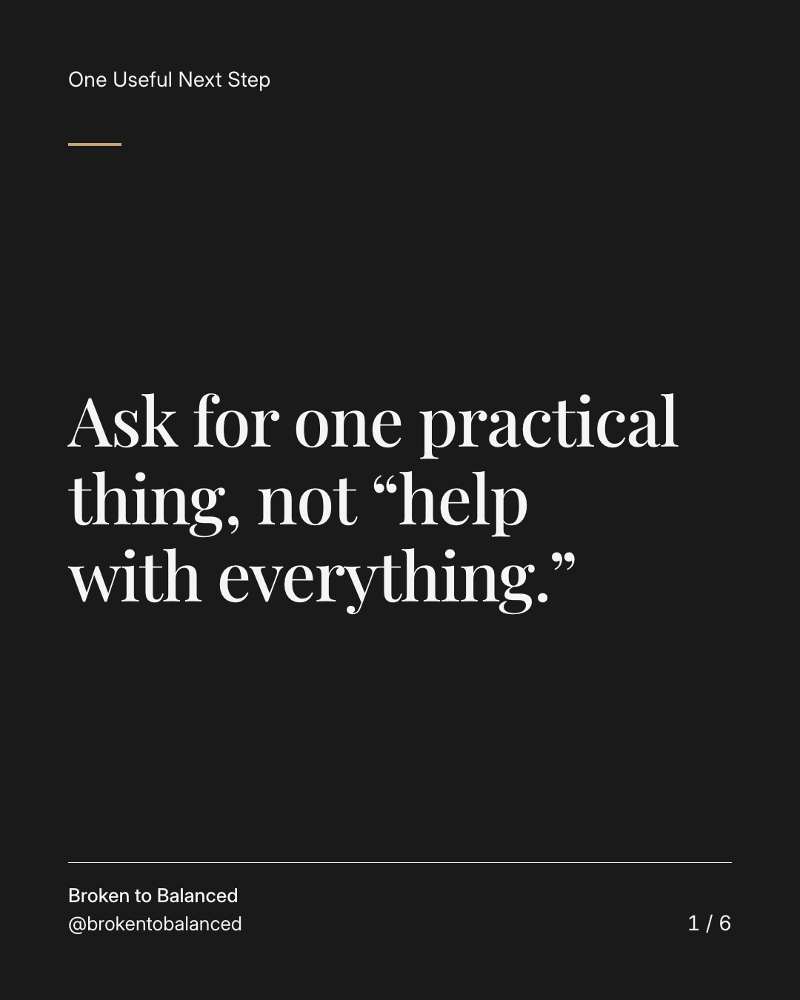
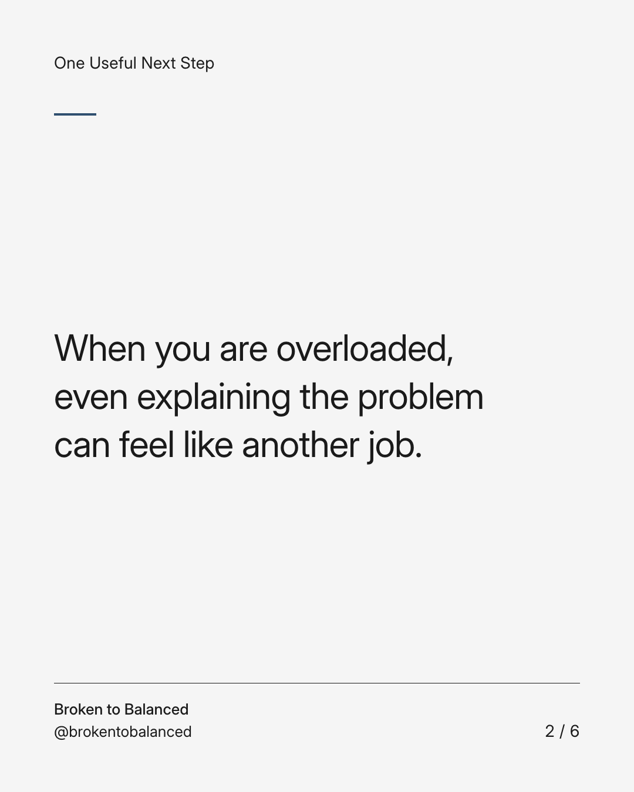
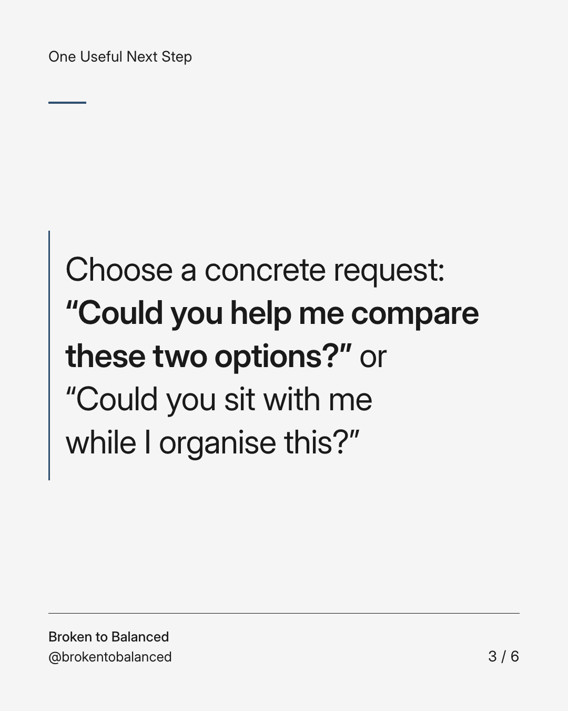
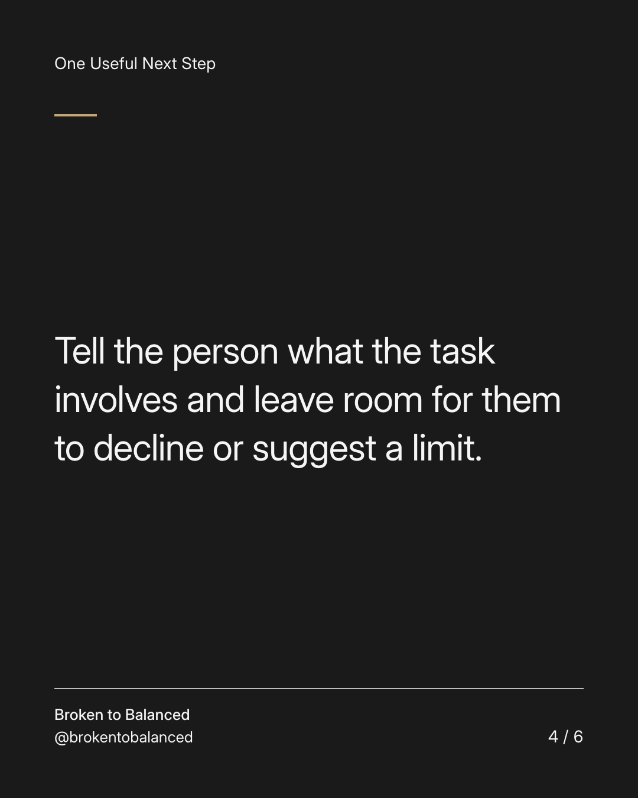
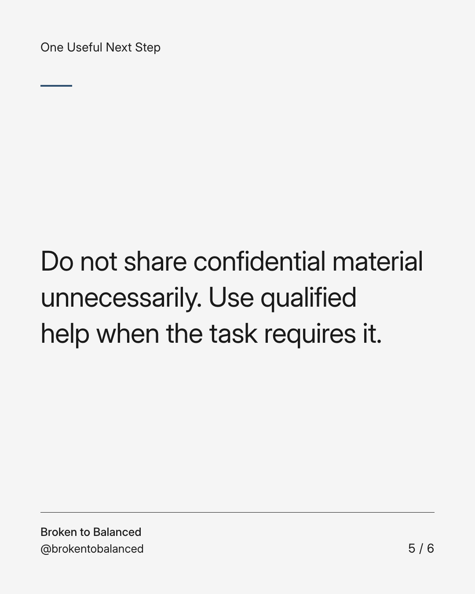
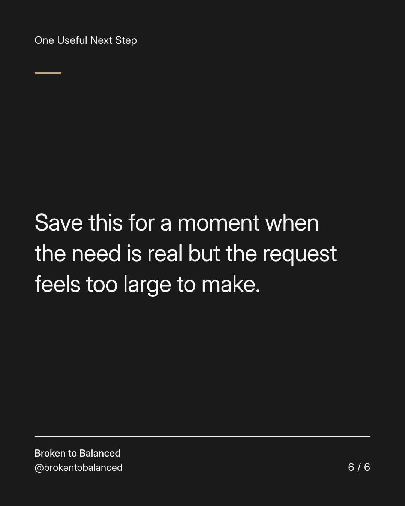

Exact text and accessibility text
Ask for one practical thing, not “help with everything.”
Slide 1 of 6. Ask for one practical thing, not “help with everything.”


Exact text and accessibility text
When you are overloaded, even explaining the problem can feel like another job.
Slide 2 of 6. When you are overloaded, even explaining the problem can feel like another job.


Exact text and accessibility text
Choose a concrete request: “Could you help me compare these two options?” or “Could you sit with me while I organise this?”
Slide 3 of 6. Choose a concrete request: “Could you help me compare these two options?” or “Could you sit with me while I organise this?”


Exact text and accessibility text
Tell the person what the task involves and leave room for them to decline or suggest a limit.
Slide 4 of 6. Tell the person what the task involves and leave room for them to decline or suggest a limit.


Exact text and accessibility text
Do not share confidential material unnecessarily. Use qualified help when the task requires it.
Slide 5 of 6. Do not share confidential material unnecessarily. Use qualified help when the task requires it.


Exact text and accessibility text
Save this for a moment when the need is real but the request feels too large to make.
Slide 6 of 6. Save this for a moment when the need is real but the request feels too large to make.
Exact caption
Plain-text fallback: select and copy the caption.